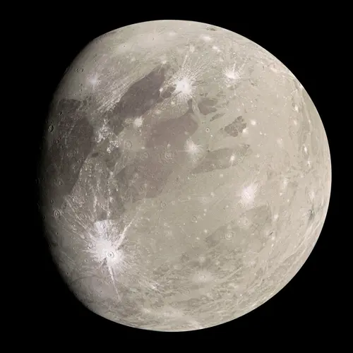

Ganimedes - Lua de Júpiter

Introdução e História
Ganimedes é a maior lua de Júpiter e do Sistema Solar, descoberta por Galileo Galilei em 7 de janeiro de 1610. Com um diâmetro de cerca de 5.268 km, Ganimedes é maior até que o planeta Mercúrio. Durante séculos, apenas telescópios revelavam sua superfície brilhante e cheia de crateras, mas missões espaciais modernas, como a sonda Juno, forneceram imagens detalhadas e dados sobre sua composição e atividade geológica.
Características Físicas: Diâmetro, Massa e Órbita
Ganimedes tem aproximadamente 5.268 km de diâmetro, tornando-o a maior lua do Sistema Solar.
Orbita Júpiter a uma distância média de 1.070.000 km, completando uma volta ao redor do planeta em cerca de 7,15 dias.
Sua densidade sugere que é composto de gelo de água e rocha, com um núcleo metálico que pode gerar um campo magnético próprio — uma característica única entre as luas do Sistema Solar.
Estrutura Interna e Atividade Geológica
Ganimedes possui uma camada externa de gelo, sob a qual acredita-se que exista um oceano subterrâneo de água líquida, potencialmente maior que todos os oceanos da Terra juntos. A crosta gelada é marcada por crateras antigas e regiões mais jovens com sulcos e falhas, indicando atividade tectônica no passado.
Seu núcleo metálico e a presença de gelo em grande escala sugerem que Ganimedes ainda pode ter algum calor interno, gerado por decaimento radioativo e forças de maré, embora sua superfície atualmente seja geologicamente menos ativa que luas como Encélado.
Missões Espaciais
Ganimedes foi estudado por múltiplas missões, incluindo as sondas Voyager, Galileo e recentemente Juno, fornecendo informações sobre sua superfície, campo magnético e possíveis oceanos subterrâneos.
- Superfície dividida entre regiões antigas e crateradas e sulcos mais jovens;
- Campo magnético próprio, sugerindo núcleo metálico ativo;
- Indícios de um oceano subterrâneo sob a crosta de gelo;
- Composição química do gelo e minerais da superfície analisados por espectrômetros.
Atmosfera e Exosfera
Ganimedes não possui uma atmosfera significativa, mas apresenta uma exosfera muito fina composta principalmente por oxigênio, detectada em pequenas quantidades. Esta camada é extremamente tênue, incapaz de sustentar vida ou reter calor, mas fornece informações sobre processos de interação com o ambiente de Júpiter.
Potencial de Habitabilidade
- 💧 Água Líquida: O oceano subterrâneo de Ganimedes, localizado sob dezenas de quilômetros de gelo, representa um ambiente onde a água líquida pode existir.
- ⚡ Fonte de Energia: Possível calor interno gerado pelo núcleo metálico e forças de maré pode fornecer energia para processos químicos complexos.
- 🧬 Ingredientes Químicos: Compostos orgânicos e minerais na crosta e no gelo indicam que há os elementos essenciais para reações químicas, semelhantes aos ambientes onde a vida pode surgir.
Curiosidades
Ganimedes é a única lua conhecida com campo magnético próprio.
Possui regiões geladas brilhantes e sulcos escuros que indicam atividade tectônica passada.
Se seu oceano subterrâneo for confirmado, ele poderia conter mais água do que todos os oceanos da Terra juntos.
Origem do Nome
Ganimedes recebeu seu nome da mitologia grega, inspirado no jovem príncipe troiano conhecido por sua beleza incomparável. Segundo a lenda, Zeus ficou encantado com Ganimedes e o levou para o Olimpo, onde ele se tornou copeiro dos deuses e teve a honra de servir néctar e ambrosia aos deuses do panteão grego. A escolha desse nome segue a tradição de batizar as luas de Júpiter com personagens mitológicos ligados ao deus, reforçando a conexão histórica entre astronomia e mitologia, e refletindo a importância de Ganimedes como a maior lua do Sistema Solar.
Referências
- NASA. Ganymede: Moon of Jupiter. Disponível em: https://solarsystem.nasa.gov/moons/jupiter-moons/ganymede/overview/. Acesso em: 24 dez. 2025.
- NASA/JPL. Juno Ganymede Flyby. Disponível em: https://www.nasa.gov/mission_pages/juno/news/juno-flyby-of-ganymede.html. Acesso em: 24 dez. 2025.
- WIKIPEDIA. Ganimedes (satélite). Disponível em: https://pt.wikipedia.org/wiki/Ganimedes_(sat%C3%A9lite). Acesso em: 24 dez. 2025.